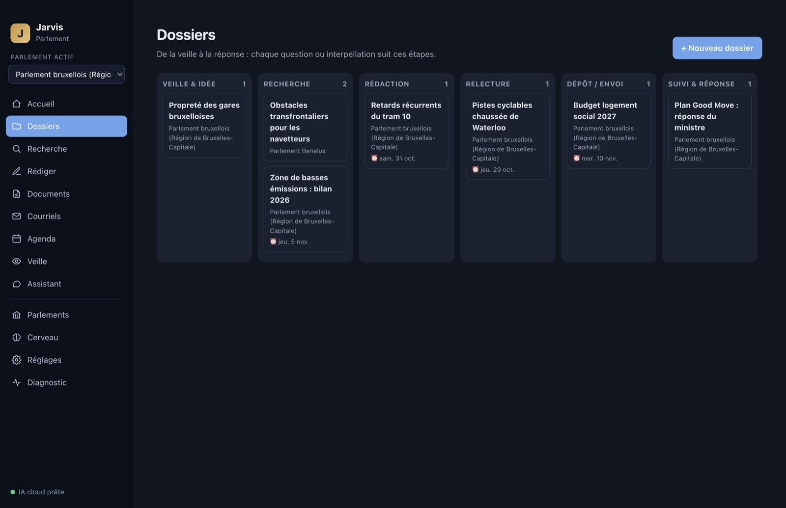
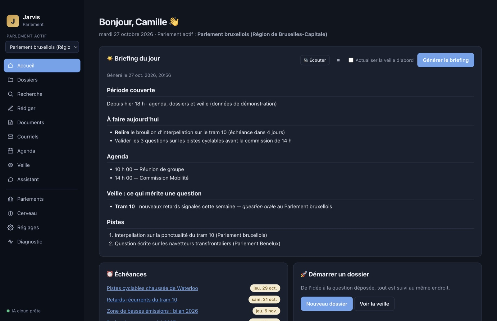
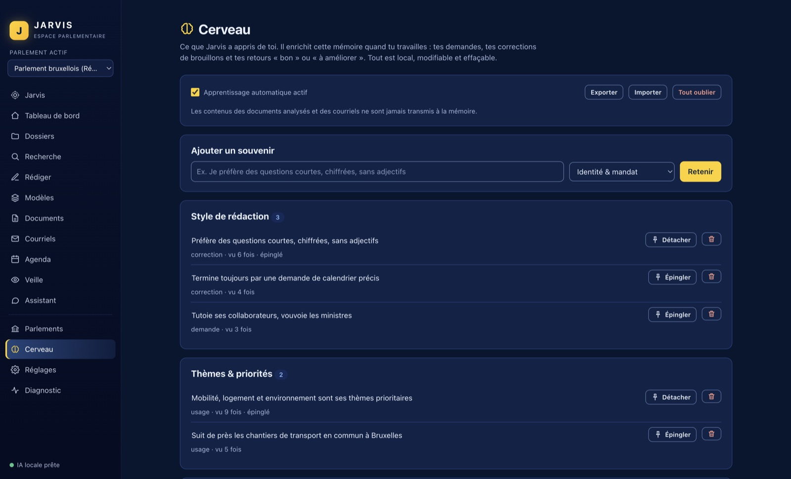

Du premier signal à la question déposée.
Jarvis suit l'actualité, prépare vos recherches, rédige selon le modèle de votre parlement et se souvient de votre façon de travailler. Une application Mac, qui reste chez vous.
curl -fsSL https://raw.githubusercontent.com/renaud-bxl/jarvis-parlement-Claude/main/install.sh | bash
À coller dans le Terminal. Vous préférez un fichier ? Télécharger le .dmg
macOS 12 ou plus récent, Mac Apple Silicon ou Intel.
Un dossier suit toutes les étapes, au même endroit.
Chaque question ou interpellation avance de colonne en colonne. Rien n'est déposé à votre place : Jarvis prépare, vous décidez.
Veille
Vos sujets sont surveillés. Chaque trouvaille propose une piste de question.
Recherche
Antécédents, compétence, chiffres et sources.
Rédaction
Le texte suit le modèle du parlement choisi.
Relecture
Vous corrigez. Jarvis apprend de vos corrections.
Dépôt
Texte exporté ou courriel prêt, après votre validation.
Suivi
La réponse du ministre est classée avec le dossier.
Clos
Archivé dans le dossier du parlement.

Le tableau des dossiers. Données de démonstration.
Ce que Jarvis fait pour vous.
- Recherche web et projet parlementaire
- Compétence, antécédents, actualité et angles de questions, avec les sources consultées.
- Analyse d'un document, sans web
- Un PDF ou un Word lu en local, sans recherche sur internet. Avec un moteur local, le document ne quitte pas votre Mac.
- Briefing du jour
- Agenda, échéances, veille et courrier résumés en une page.
- Boîte mail intelligente
- Vos mails non lus, de tous vos comptes (Gmail, IMAP), sont rangés par catégorie : attente de réaction, événements, importants, newsletters. Les alertes de suivi, les expéditeurs urgents et un bouton « Ajouter à mon agenda » sont inclus. Lecture seule : rien n'est marqué comme lu ni déplacé.
- Envoi d'un fichier .eml
- Une fenêtre affiche le compte, tous les destinataires et le texte. Rien ne part sans votre clic.
- Index de vos documents
- PDF, Word, texte, mails : indexés sur votre Mac, interrogeables en quelques mots.
- Google Agenda
- Connexion native en lecture seule, avec Gmail si vous le souhaitez.
- Veille automatique
- À l'heure et aux jours que vous choisissez. Un bouton la retire en un clic.
- Diagnostic
- Moteur, comptes, agenda, index, voix : tout est vérifié et expliqué.
- Voix
- Dites « Hé Jarvis » : il se réveille, comprend, agit et répond avec une voix humaine française (femme ou homme) fournie avec l'application, hors-ligne.

L'accueil et le briefing du jour. Données de démonstration.
Changez de parlement, rien d'autre ne change.
Un député bruxellois qui rejoint le Parlement francophone ou le Parlement Benelux garde son application, ses dossiers et ses habitudes. Seuls les modèles d'interpellation changent.
Huit parlements sont prêts : Bruxelles, Cocof, Chambre, Sénat, Wallonie, Fédération Wallonie-Bruxelles, Benelux et Parlement européen. Vous pouvez aussi en ajouter un qui n'existe pas encore.
Les trames de questions sont des points de départ. Longueurs, délais et formes de dépôt sont à vérifier au règlement en vigueur : Jarvis vous le rappelle à la fin de chaque texte.
Documents/Jarvis-Parlement/ ├─ Parlement-Bruxelles/ │ ├─ 01-Veille │ ├─ 02-Recherches │ ├─ 03-Interpellations-et-Questions │ ├─ 04-Documents │ ├─ 05-Courriers │ └─ 06-Archives └─ Parlement-Benelux/ créé dès que vous l'ajoutez
Chaque parlement ajouté reçoit son dossier et ses sous-dossiers, automatiquement.
Un cerveau qui apprend votre façon de travailler.
Plus vous l'utilisez, moins vous répétez. Jarvis retient votre style, vos thèmes et vos sources, à partir de vos demandes, de vos corrections et de vos pouces.
- Préfère des questions courtes, chiffrées, sans adjectifsStyle de rédaction · vu 6 fois
- Termine toujours par une demande de calendrier précisStyle de rédaction · vu 4 fois
- Cite les réponses ministérielles antérieures avec leur numéroProcédure · vu 3 fois
Exemples de souvenirs. Chacun est visible, modifiable, épinglable ou effaçable.
